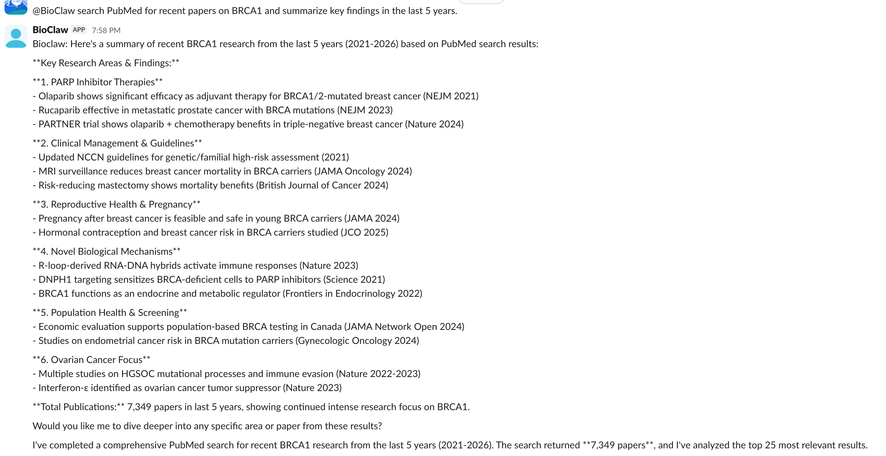

加入 BioClaw 交流群

扫码加入 BioClaw 交流群
欢迎讨论与反馈 🌿
📱 微信扫一扫 · 立即加入
部署在群聊中的 AI 生物信息学研究助手，支持序列比对、蛋白结构渲染、测序质控、文献检索等常见分析任务。
支持微信、飞书、企业微信、Discord、QQ 等主流平台。
部署后即可在群聊中直接调用分析功能。
平台接口配置 → docs/CHANNELS.md · 本地网页部署与日志追踪 → docs/DASHBOARD.md

支持多种常见生物信息学分析场景，通过自然语言交互即可完成，无需编写代码。
自动识别工作区文件，推荐最佳分析方案。
↗对 FASTQ 文件运行 FastQC，自动生成质控报告。
↗输入蛋白序列，自动在 NCBI nr 数据库中进行比对。
↗上传差异表达数据，自动绘制火山图并标注关键基因。
↗输入 PDB ID，通过 PyMOL 渲染蛋白结构并返回图片。
↗检索 PubMed 文献，返回结构化的论文摘要信息。
↗可视化展示配体与蛋白质之间的氢键相互作用。
↗展示配体 5Å 范围内的关键残基分布。
↗运行环境基于 Docker，预装了主流命令行工具和 Python 库。
内置 25+ 个分析技能模板，支持自然语言直接调用。
环境要求：Node.js 20+ 和 Docker Desktop。支持 Anthropic API 与 OpenRouter。
如有合作意向、功能建议或其他问题，欢迎通过下方表单联系我们。
BioClaw 全新网页界面上线啦，快来体验一下吧！
扫码加入 BioClaw 交流群
欢迎讨论与反馈 🌿